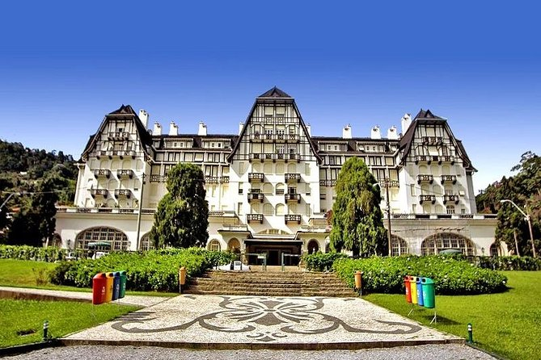

Petrópolis - The Imperial City
Petrópolis is a municipality located in the Metropolitan Region of Rio de Janeiro in the state of Rio de Janeiro, Brazil, also known as the Imperial City. It occupies an area of 795,798 km², its population in the year 2018 was 305 687 inhabitants according to IBGE estimates. In addition to being the largest and most populous city in the Serrana Fluminense region and in the Intermediate Geographic Region of Petrópolis, it also has the highest GDP and HDI in the region. The municipal gentile of Petrópolis is Petropolitan.
Petrópolis is the safest city in the state of Rio de Janeiro and the sixth safest city in Brazil, according to the IPEA classification for medium and large cities. Petrópolis is the headquarters of the National Scientific Computing Laboratory, a research unit of the Ministry of Science, Technology and Innovation.
The mild climate, historic buildings and abundant vegetation are great tourist attractions. In addition, the city has a bustling trade and services, as well as agricultural production (with emphasis on fruit) and industry. Founded on the initiative of Emperor Dom Pedro II (its name comes from the combination of the Latin word Petrus (Pedro) with the Greek Polis (city), becoming "Peter's City"). It is often called the "Imperial City", as it was Dom Pedro's favorite route for his moments of leisure and rest. It was temporarily state capital between 1894 and 1902, due to the Armada Revolt.
Learn more at Wikipedia.org